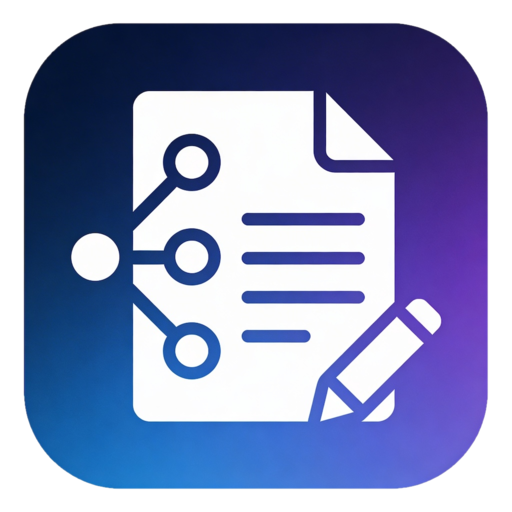
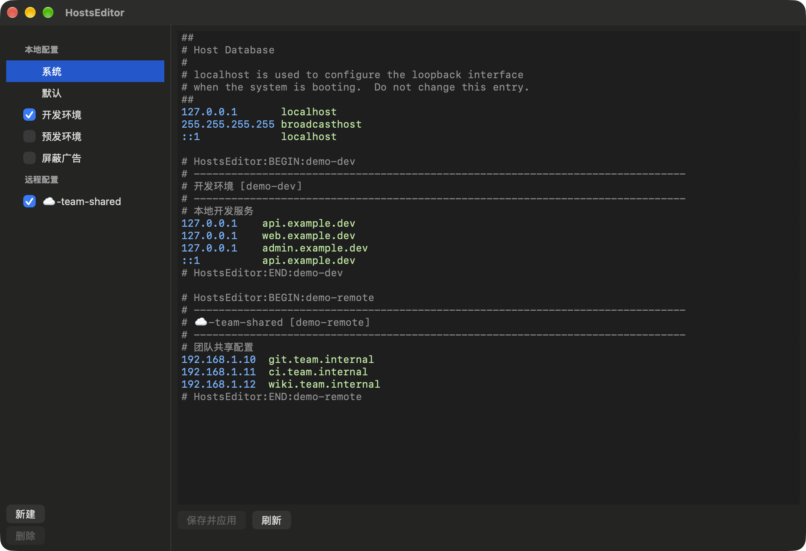

macOS 上的 Hosts 文件编辑与方案切换工具。在多套 hosts 配置之间稳定切换，通过特权 Helper 安全写回 /etc/hosts。
A hosts file editor and profile switcher for macOS. Switch between multiple hosts setups reliably, and write /etc/hosts safely through a privileged helper.

左侧是方案列表：「系统」为当前 /etc/hosts 全文，「默认」为剥离 HostsEditor 管理块后的基础内容，下方是本地方案与远程方案，勾选即启用；右侧是带语法高亮的编辑器。 Profiles on the left: “System” is the full /etc/hosts, “Default” is the base content without HostsEditor blocks, followed by local and remote profiles — tick to enable. On the right, an editor with syntax highlighting.
本地开发切换环境、团队分发共享配置、菜单栏一键开关，都在一个原生 App 里。Switch dev environments, share team configs by URL and toggle profiles from the menu bar — in one native app.
应用管理的内容写成带标记的块，多个启用方案可以组合写入，原始基础内容保持不变。Managed content is written as marked blocks, so several enabled profiles combine while your original base content stays intact.
127.0.0.1 localhost # HostsEditor:BEGIN:<profile-id> 127.0.0.1 api.example.dev # HostsEditor:END:<profile-id>
不确定芯片类型？打开「苹果菜单 › 关于本机」，看“芯片”或“处理器”一栏。Not sure which chip you have? Open › About This Mac and check “Chip” or “Processor”.
⌘S 保存并应用。Click “New” to create a local or remote profile, tick it to enable, and press ⌘S to save and apply.